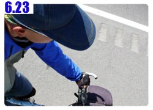

從北京出發到抵達中國和哈薩克的邊界，正好花了兩個月的時間，真是多虧胡榮華大哥給的指導，
沒有將行程排得太緊湊，一路上可以邊騎邊玩、累的時候也能充分休息，不至於因為太趕路而錯失路上的風景。
騎到邊界，中國部分就算結束了，總計里程表是5704.57公里，比當初估計的要多出三百公里。
因為這還加上了我騎車亂晃以及迷路的距離，所以跟預估里程是相距不遠的。
騎了兩個月、五千多公里的路，已經突破了自己環法時的時間和距離，但這沒什麼好得意的，因為困難的還在後面等著我。
如胡大哥所說的，中國這一段路，我佔盡了便宜，語言能通、天候適宜、道路良好，但是出了中國之後就不一樣了。
雖然能講話，但是沒人聽得懂，路標就在眼前，可是字母一個也看不懂，治安、消費、天候種種的考驗正要開始。
一開始是出發的第一天。從北京開始，大家都說第一步最困難。
然後是騎到西安，暖身完畢，接下來就要往內陸走，又是新的挑戰。
然後到了蘭州，離開這裡一望無盡的戈壁灘正在等著我，路越來越艱難。
經過烏魯木齊，抵達邊界，回顧這兩個月來的點點滴滴，每一個片刻都歷歷在目。
彷彿上一秒鐘才傻呼呼的搭飛機場的計程車進入北京市，惶恐的展開行程，現在已經騎了好一段路了。
這段時間，我在學著長大，用不同的角度、不同的思考邏輯來看世界。
人和人之間的互動、自然景觀的變化、果腹的美食、只有前進沒有退後的道路，每天我都讓自己保持感恩的心情。
不論是出發前或是旅行中，我都得到太多人無償的幫助，每天所花的金錢、刻苦耐勞的小多、身上穿的衣物、手中敲著的電腦，
所有的物質和精神上的鼓勵，都是關心我的朋友們真心的給予，不求回報。
每天騎車的時候，我都想說起碼也要發生一點事情，讓我可以寫一篇遊記出來，如果什麼事都沒發生，那我可能要自己去撞車來製造話題了。
但這些都是多慮的，即使是平凡無奇的一天，也值得用心去感受，路上遇到的人給予的加油聲、烈日下吹來的一陣涼風、乾渴時的一口涼水。
很多心情我無法以文字和照片分享出來，只能沉澱在自己的心裡，對每一件發生的事情都抱著感恩的心。
不喜歡拍照的我，一開始是計畫所有的照片都是以我的眼睛看出去為視點，將我的所見所聞記錄下來。
讓看遊記的人，能夠有身歷其境的感覺，彷彿自己就是旅行中的主角，真抱歉後來我的照片破壞了各位想像的空間。
很多人都說我像個長不大的小孩，看事情的想法太天真、做事也不夠圓滑，很容易傷害到自己。
旅行中我在學著長大，經過種種的考驗磨練自己的肉體和心靈，對事情的堅持變得更加的果決，只要自己認為是對的事情，就義無反顧的去做。
當然這樣跟還沒長大之前的我好像沒什麼差別，可是內心深處的我知道有那麼一點點的不一樣。
一路上我都會記得出國前胡大哥的叮嚀，『應變力、適應力、判斷力』除了靠旅行來磨練之外，空口談是沒有用的。
自己的改變就是曬黑的雙手一樣，是日積月累的，今天看起來跟昨天只差一點點，昨天和前天又只差一瞇瞇。
跟我每天將GPS的軌跡讀出來看的時候一樣，路線這麼遠，每天我騎的只有一條不到三公厘的長度，要什麼時候才能騎到巴黎呢？
可是如今我的雙手已經變成黑白分明的兩色，很多條三公厘的線連接起來，也已經橫跨了整個中國。
照鏡子看自己，看得到外表的變化，頭髮長了、又在達坂城剪短了，但鏡子照映不出來的是內心的成長。
僅僅靠著這幾篇我臨睡前，靠在床頭寫出來的遊記，所引發的回響和共鳴，可能已經遠遠超乎我的想像。
每聽到一個人說看了遊記之後也身體力行的騎單車通勤，將塵封多年的自行車重新拿出來，十幾年沒騎自行車的人也再度跨上了硬梆梆的座椅。
真的發自內心的感謝，大家會願意去做這樣的事情，不只是看著遊記哈哈的笑兩聲就關掉電腦，而是真的響應『騎單車、護地球』的活動。
常有人說我雖然打著減緩地球暖化的口號出來騎車，但是遊記中卻很少提到相關的議題，看起來只像是一般的單車旅行罷了。
坦白的講，光憑我一個人騎單車從北京到巴黎，甚至環繞世界一圈好了，對改善地球暖化有任何的幫助嗎？
答案是沒有的！
呼口號是很傻的行為，實際去做的人才令人敬佩，謝謝每一位支持『Bike To Protect Our Planet』的大家，因為有你們，這個活動才得以彰顯出他的價值。
地球暖化的問題，台灣在乎、我在乎、正在看這篇文章的你也在乎，因為我們同樣都住在地球上，是互相依靠的一份子。
我不是英雄，在遊記的第一天就下了這樣的標題，等騎到巴黎，我也會用同樣的標題再寫一次。
願意挺身而出去實現、去推廣這個活動的人，你們才是真正的英雄，因為你們才是保護地球的一份子。
不單單是騎單車，節約能源才是關鍵，單車只是日常生活中一項環保的交通工具，還有更多的事情是隨手可以去做的。
垃圾分類、隨手關燈、改用省電燈泡、少吹冷氣、少開車多搭大眾運輸，這些行動都已經是大家所知道的，只是能不能去實行它的問題。
我相信你可以做到的，對吧？
接下來還有四個月的旅行要展開，明天會發生什麼永遠無法預料，但是我會去享受這一路上的點點滴滴。
並且盡可能的透過粗略的文字和照片跟大家分享，這趟旅行我一點也不寂寞，陪伴在我身旁的是各位的關心和鼓勵的掌聲。
我會騎到巴黎的，不論是早還是晚，不論那一天是下雪還是晴天，總有一天我會抵達巴黎，在那揮舞著BTP的旗幟和台灣的國旗。
當我站在艾菲爾鐵塔下的那一刻，這份感動希望大家都能一起分享、一起大笑和落淚。
你相信我可以騎到巴黎，對吧？
繼續閱讀：6.24 整裝待發
中國-人民幣－ 1：4.3 台幣
6.23
總計：21元
網吧2元、冰棒兩支1元、餛飩3元、住店15元